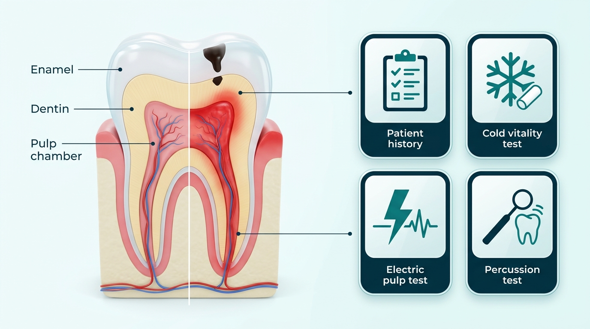

NT-01: Chẩn đoán bệnh lý tủy răng: Từ bệnh sử, triệu chứng đến nghiệm pháp và chẩn đoán phân biệt

Trong hơn 40 năm đứng bên ghế máy nha khoa, tôi luôn tâm niệm một câu nói kinh điển của nghề y: "Chẩn đoán đúng đã là một nửa của thành công." Trong điều trị Nội nha, sai lầm lớn nhất không nằm ở kỹ thuật tạo hình hay trám bít ống tủy, mà nằm ở việc chẩn đoán vội vàng — nhầm lẫn giữa răng còn cơ hội giữ tủy sống với răng đã viêm tủy không hồi phục, hoặc điều trị nhầm sang một chiếc răng lành lân cận chỉ vì cơn đau lan tỏa. Dưới góc nhìn của Nha khoa can thiệp tối thiểu (MID), chẩn đoán bệnh lý tủy răng là nghệ thuật kết hợp chặt chẽ giữa bệnh sử, triệu chứng lâm sàng, các nghiệm pháp thăm khám và chẩn đoán phân biệt để đưa ra quyết định bảo tồn chuẩn xác nhất.
1. Khai thác bệnh sử: Lắng nghe "ngôn ngữ" của chiếc răng
Trước khi cầm gương hay thám trâm, người bác sĩ cần dành thời gian lắng nghe bệnh sử một cách hệ thống. Bệnh sử không chỉ là lời kể của người bệnh, mà là bản đồ định hướng cho toàn bộ quá trình thăm khám:
- Tính chất cơn đau: Đau nhói thoáng qua khi gặp kích thích (lạnh, ngọt, chua) rồi hết ngay sau vài giây thường gợi ý tình trạng ngà lộ hoặc viêm tủy có hồi phục. Ngược lại, cơn đau tự phát (không có kích thích vẫn đau), đau âm ỉ kéo dài hàng giờ, đau tăng về đêm khi nằm hoặc đau nhói khi uống nước nóng là dấu hiệu cảnh báo tổn thương tủy đã đi xa hơn.
- Vị trí và hướng lan: Tổn thương tủy giai đoạn đầu thường khó định vị chính xác vì tủy răng không có thụ thể cảm thụ bản thể (proprioception); người bệnh chỉ cảm thấy đau cả một vùng hàm hoặc lan lên thái dương, tai, cổ. Chỉ khi viêm lan qua chóp vào dây chằng nha chu, người bệnh mới chỉ đúng chiếc răng đau.
- Tiền sử điều trị & chấn thương: Một chiếc răng từng được trám sâu cách đây vài tháng, từng mài bọc mão sứ, hoặc từng bị va đập nhiều năm trước đều có thể âm thầm diễn tiến bệnh lý tủy dù bề mặt hiện tại trông rất bình thường.
2. Triệu chứng lâm sàng: Nhìn sâu hơn bề mặt men răng
Khám lâm sàng đòi hỏi sự tỉ mỉ dưới ánh sáng tốt và độ phóng đại phù hợp:
- Khám ngoài mặt & mô mềm: Quan sát sưng nề vùng má, hạch dưới hàm, kiểm tra ngách hành lang xem có lỗ rò mủ (sinus tract) hoặc vùng niêm mạc đổi màu đỏ sậm tương ứng vùng chóp hay không.
- Khám thân răng: Tìm các lỗ sâu kín ở kẽ răng, bờ miếng trám cũ hở vi kẽ, các đường nứt men dọc thân răng, vết mòn cổ răng hình chêm sâu hoặc răng đổi màu xám đục/hồng nhạt (dấu hiệu xuất huyết hoặc hoại tử tủy cũ).
- Gõ và sờ: Gõ dọc và gõ ngang bằng cán gương giúp đánh giá phản ứng của dây chằng nha chu quanh chóp; sờ vùng ngách lợi tương ứng chóp chân răng giúp phát hiện sớm tình trạng đau khu trú hoặc tiêu bản xương ngoài.
3. Các nghiệm pháp đánh giá tủy và quanh chóp
Không có một nghiệm pháp đơn lẻ nào đủ sức kết luận tình trạng tủy. Nguyên tắc vàng là luôn thử nghiệm trên răng đối chứng khỏe mạnh trước để thiết lập ngưỡng cảm giác nền của từng bệnh nhân, sau đó mới thử trên răng nghi ngờ:
- Thử lạnh (Cold Test): Là nghiệm pháp tin cậy hàng đầu trong lâm sàng hằng ngày (dùng khí lạnh chuyên dụng hoặc đá CO₂). Đáp ứng bình thường là cảm giác buốt nhẹ, hết ngay sau khi bỏ tác nhân lạnh 1–2 giây. Đáp ứng kéo dài dữ dội gợi ý viêm tủy không hồi phục; không đáp ứng (khi răng không bị canxi hóa ống tủy) gợi ý tủy hoại tử.
- Thử điện (EPT – Electric Pulp Testing): Đánh giá sự dẫn truyền của sợi thần kinh cảm giác A-delta trong tủy. Cần lưu ý rằng EPT chỉ cho biết thần kinh còn đáp ứng hay không, chứ không phản ánh lưu lượng tuần hoàn máu nuôi tủy.
- Thử nóng & thử xoang (Cavity Test): Thử nóng ít dùng thường quy nhưng hữu ích khi bệnh nhân than phiền chỉ đau với đồ nóng. Thử xoang (khoan nhẹ không tê qua men vào ngà) chỉ dùng khi các nghiệm pháp khác cho kết quả mâu thuẫn trên răng bọc sứ hoặc canxi hóa nặng.
- Nghiệm pháp cắn (Bite Test / Tooth Slooth): Cực kỳ quan trọng khi nghi ngờ răng nứt ngầm — cơn đau nhói xuất hiện rõ khi nhả lực cắn trên một múi răng cụ thể.
4. Chẩn đoán phân biệt: Tránh "bắt nhầm" thủ phạm
Trong thực hành lâm sàng, rất nhiều tình trạng có biểu hiện giống bệnh lý tủy răng nếu không chẩn đoán phân biệt kỹ:
- Quá cảm ngà răng (Dentin Hypersensitivity): Đau buốt nhanh, sắc khi gặp lạnh, gió hoặc chải răng ở vùng cổ răng lộ ngà, hết ngay lập tức khi loại bỏ kích thích; X-quang không có sâu sát tủy hay tổn thương quanh chóp.
- Hội chứng răng nứt (Cracked Tooth Syndrome): Cơn đau nhói thoáng qua khi nhai đồ dai/cứng, thử lạnh có thể bình thường hoặc nhạy cảm nhẹ, nhưng nghiệm pháp cắn từng múi dương tính rõ.
- Áp xe nha chu cấp vs. Áp xe quanh chóp cấp: Áp xe nha chu thường có túi nha chu sâu khu trú, răng vẫn có thể đáp ứng dương tính với thử tủy; trong khi áp xe quanh chóp có tủy hoại tử (thử tủy âm tính) và lỗ sâu/phục hồi lớn.
- Đau không do răng (Non-odontogenic pain): Viêm xoang hàm (đau âm ỉ nhiều răng hàm trên cùng bên, tăng khi cúi đầu), đau dây thần kinh V, hoặc rối loạn khớp thái dương hàm (TMD). Nếu thử tủy tất cả các răng đều bình thường và đối xứng, tuyệt đối không được mở tủy oan.
Lời khuyên từ Bác sĩ Trịnh Công Vương
Chẩn đoán bệnh lý tủy răng không phải là cuộc chạy đua với thời gian để "mở tủy cho nhanh", mà là quá trình thu thập bằng chứng khoa học để giữ lại sự sống cho chiếc răng bất cứ khi nào còn cơ hội. Khi thấy răng có dấu hiệu ê buốt kéo dài, đau tự phát hoặc đau khi ăn nhai, cô bác hãy đi khám sớm để được thăm khám bài bản trước khi tổn thương vượt qua ranh giới bảo tồn.
Địa chỉ: Số 15 đường Võ Nguyên Giáp, phường Đức Xuân, tỉnh Thái Nguyên
Hotline & Zalo tư vấn trực tiếp: 0912 343 858 · Website: https://tcvuong6-wq.github.io/bsvuong-web/